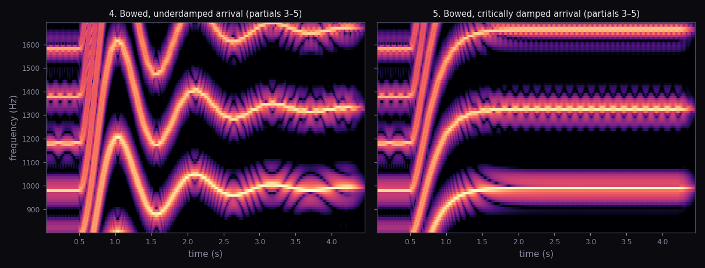
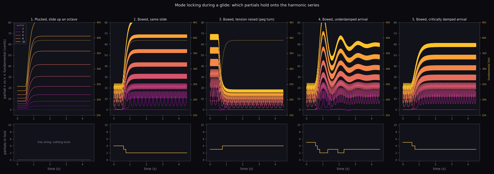

Study · multi-mode portamento · pass 2
Which partials hold on through the glide
A plucked stiff string rings at its own slightly stretched partials. A bowed string doesn't. The bow keeps pulling every partial back onto an exact multiple of the fundamental, as long as that pull is stronger than how far the stiffness pushes it off. A glide changes how far the stiffness pushes. So a glide moves partials into and out of lock, and you can hear the timbre change while the pitch moves.
dψ/dt = 2π·Δ − 2π·K·sin ψ
d(phase offset)/dt = 2π·detuning − 2π·locking_range·sin(phase offset)
locked while detuning < locking range · otherwise it slips, beating at √(Δ² − K²)
d(phase offset)/dt = 2π·detuning − 2π·locking_range·sin(phase offset)
locked while detuning < locking range · otherwise it slips, beating at √(Δ² − K²)
Five clips
1 · Plucked, slide up an octave G3 → G4 · nothing locks
Listen to the top. It drifts sharp of the harmonic series as the string shortens, and the tone turns glassy.
2 · Bowed, same slide 4 partials locked → 2
It starts fused. Partials 4 and then 3 break loose around 0.6 and 0.75 s, and a shimmer opens up in the middle of the tone.
3 · Bowed, tension raised (a peg turn) 3 locked → 4
Same octave, raised by tension instead of length. Stiffness detuning falls as tension rises, so the beating 4th partial is pulled into lock at 0.76 s and the tone clears.
The pair · underdamped or critically damped?
Both are bowed, and both arrive at the same E4. One rings past the note and back; one doesn't. Before you look at the pitch, listen for the texture right after the arrival.
A
B
B is underdamped (ζ 0.2): it overshoots to about 400 Hz. The overshoot pushes the 3rd partial's detuning past the locking range, so it lets go from 0.82 to 1.31 s, catches, and lets go again on the second ring, from 1.93 to 2.31 s. A is critically damped: it never passes the note, so the 3rd partial never comes loose. The ring-back isn't only a pitch event. It's a timbre event too. That's what this pair exists to teach.

The whole picture
